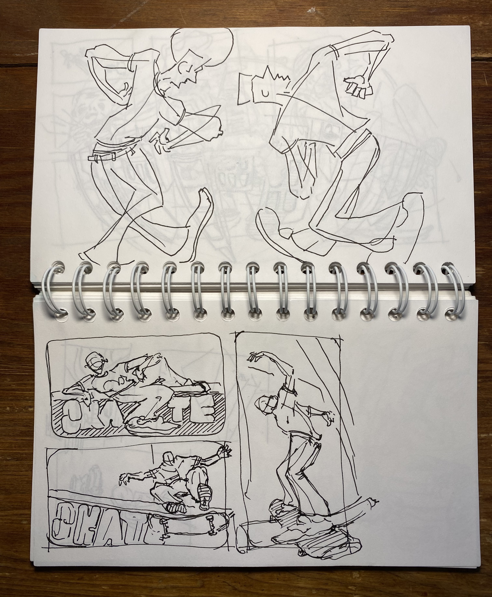
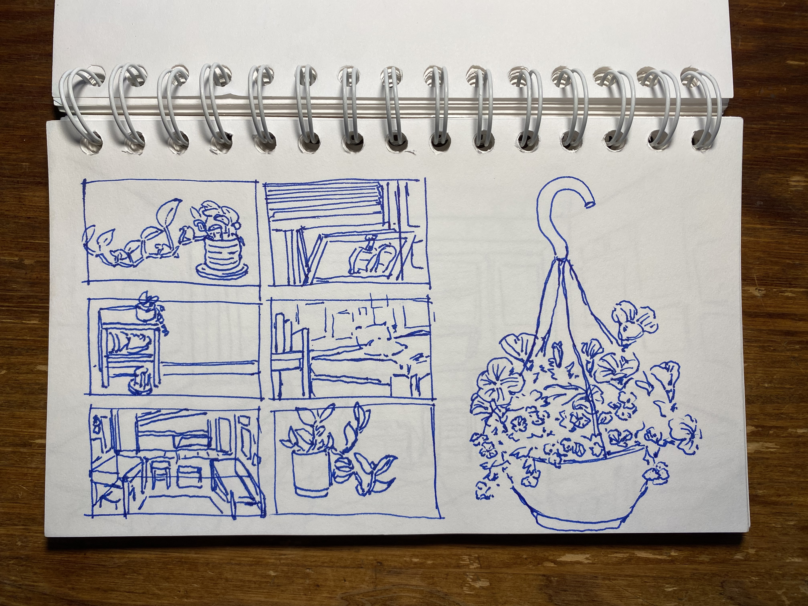
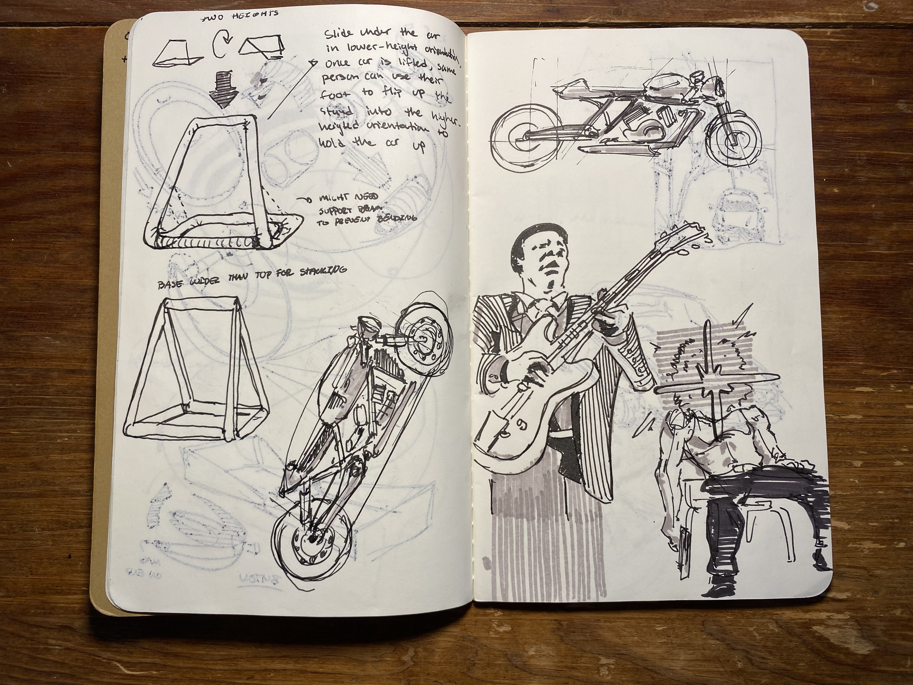
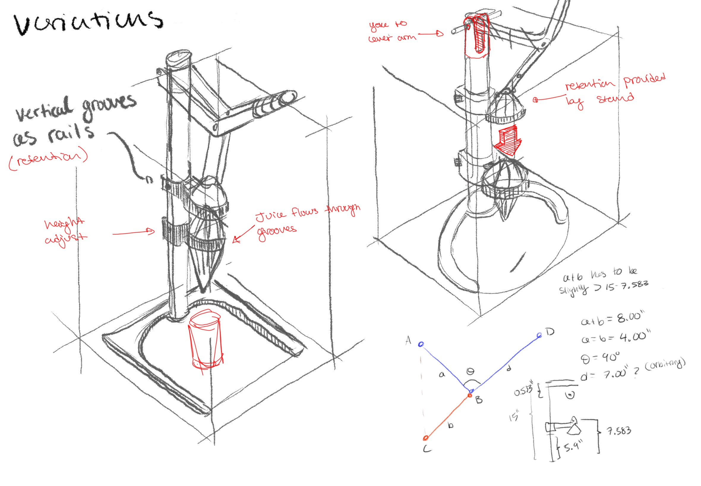
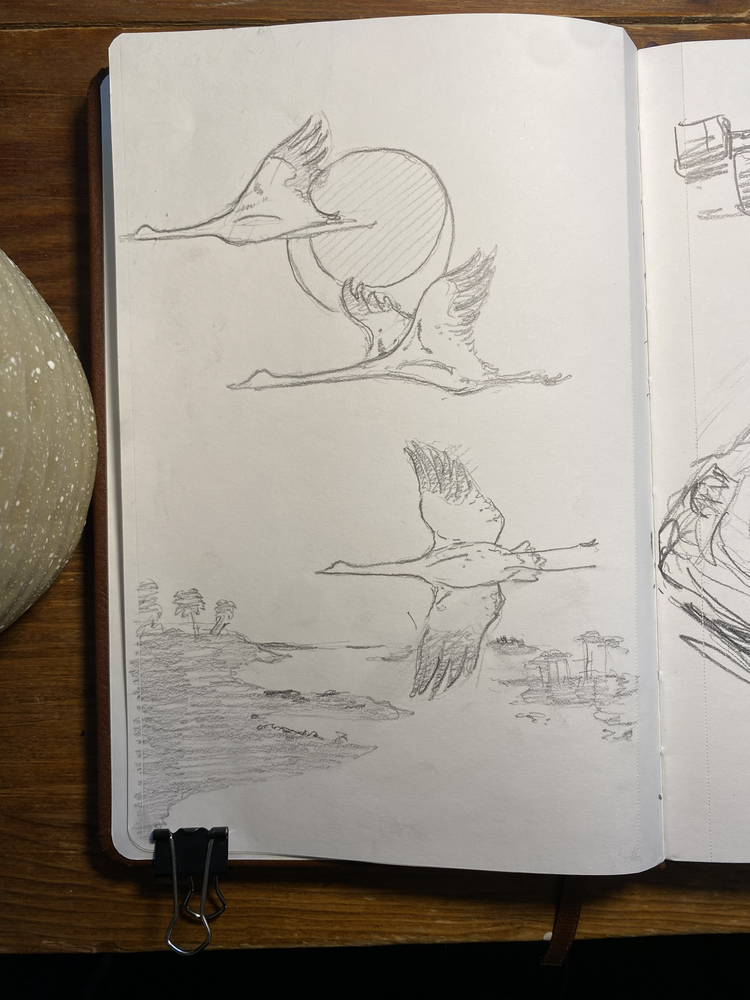
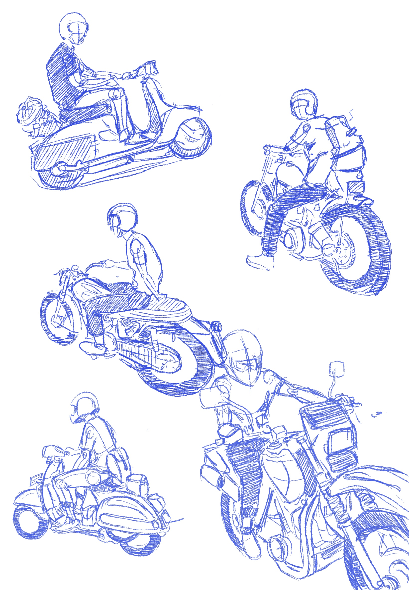
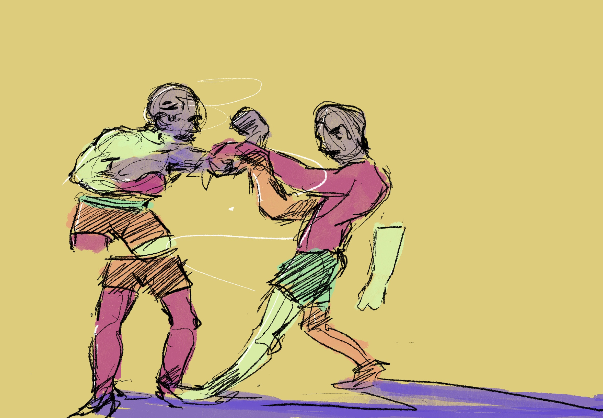
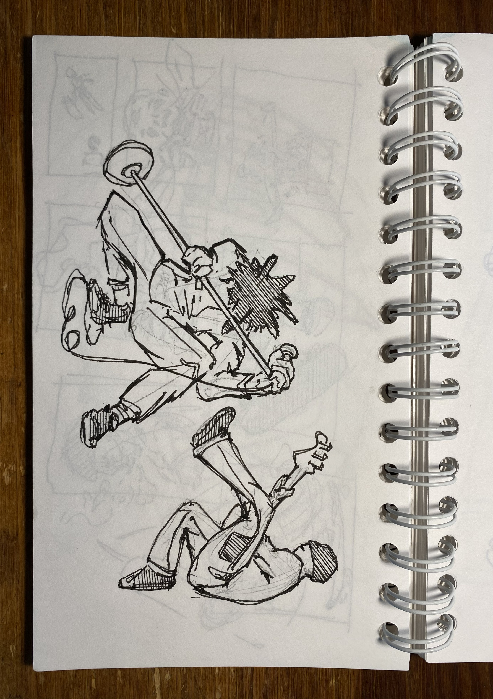
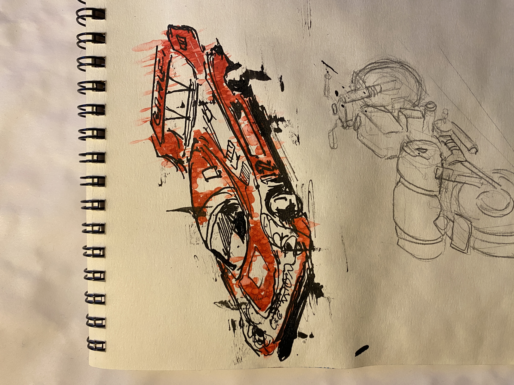

Art and Design
I became an engineer to bring ideas to life, but these ideas begin on paper.
Overview
Since before I could walk, I drew. This is a passion I continue to pursue every day. Over the years, I have filled countless sketchbooks and graffitied dozens of tables with my sketches. My mom was not happy with the latter of the two mediums.
With a passion for design, I find myself beginning any engineering idea with various sketches or artworks to encapsulate the feel of whatever I want to create. I try to combine my artistic skills with my engineering whenever I can.
As an undergraduate engineer, I have not been able to apply my design skills to much of my work, but despite this, I continue developing my artistic skills with various personal projects that involve both aesthetics and mechanics. I am still in search of a career where I can embrace my interdisciplinary interests to create.
Gallery: Some recent sketches









